7210A40 front side panel (level 1)
- Path
- Procedures > 72 PANELS AND FRAME > 7210 REMOVING REFITTING > 7210A structural elements (front part) > 7210A40 front side panel (level 1)
- Kind
- repair procedure (removal / refitting; the operation number is the code)
- Applies to
- all engines; all production periods
- Interactive page
- https://sloeber94.github.io/elrnDB-a156/en/#/3239027
Applies to: all engines; all production periods
 Removing
Removing
 Refitting
Refitting7210A15 R.R. HEADLAMP HOUSING/FRONT WING CROSSMEMBER .
7210A16 R.R. WING LOWER CROSSMEMBER .
Check if any of the connected parts are deformed by checking body alignment dimensions. Use appropriate measurement tools (reference rigs, templates or gauges).
Straighten the body if necessary.
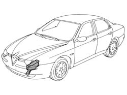
Applies to: all engines; all production periods
1. Cut with a pneumatic saw following the cutting lines in accordance with the dimensions given in the figure.
2. Use a rotary brush to clean the areas to be ground to expose the weld spots.
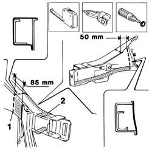
Applies to: all engines; all production periods
1. Use a chamfering machine to remove the weld spots.
2. Remove the side panel trim from its seat.
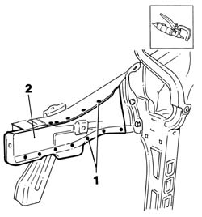
Applies to: all engines; all production periods
1. Drill out the weld spots shown in the figure.
2. Use a chamfering machine to crop the weld spots indicated in the figure.
3. Remove the strut from its seat.
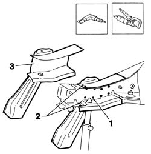
Applies to: all engines; all production periods
1. Use a circular saw to cut the inner reinforcement. Respect the dimension shown in the figure.
2. Remove the reinforcement from its seat.
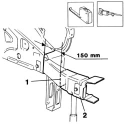
Applies to: all engines; all production periods
Straighten the body edges using a mallet and profiled stake.
Use a grinding wheel to remove the weld spot residues.
1. Apply the electric weld paint finish.
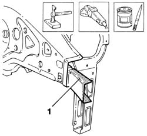
Applies to: all engines; all production periods
1. Cut the inner reinforcement at the bench. Take care to leave a sufficiently wide section of steel to attach the new part to.
Use a rotary brush to remove rust-proofing from the edges of the part in contact with the strut.
2. Apply electroweldable paint finish to edges in contact with the strut.
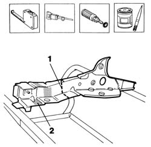
Applies to: all engines; all production periods
Refitting
Removing1. Lay the inner reinforcement on the car and position correctly using a template and self-locking clips.
Check it is properly aligned.
2. Use a circular saw to trim the panel and remove excess parts.
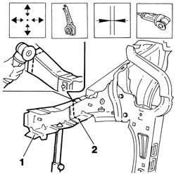
Applies to: all engines; all production periods
1. Use a MIG welder to seam weld the inner reinforcement.
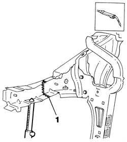
Applies to: all engines; all production periods
Use a grinding wheel to level weld residues and remove.
1. Apply rust-proofing to newly welded areas.
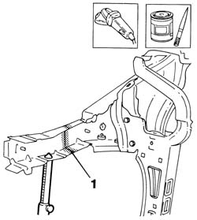
Applies to: all engines; all production periods
1. Cut the strut at the bench. Take care to leave a sufficiently wide section of steel to attach the new part to.
Use a rotary brush to remove the corrosion-proofing from around the inner and outer edge.
2. Apply electric weld paint finish to the newly-treated panel edges.
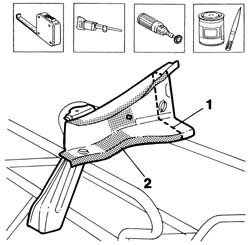
Applies to: all engines; all production periods
1. Position and fix correctly the strut on the car using the gauge and self-locking grippers.
Check the part is properly aligned on the car.
2. Use a circular saw to trim the panel and remove excess parts.
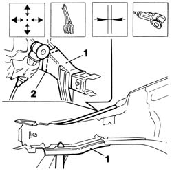
Applies to: all engines; all production periods
Straighten the body edges using a mallet and profiled stake.
Use a rotary brush to remove rust-proofing.
1. Apply electroweldable paint finish to edges in contact with the panel.
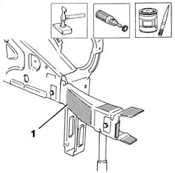
Applies to: all engines; all production periods
1. Position the pillar on the car correctly using a gauge and self-locking clips.
2. Use a MIG welder to carry out the seam welding.
3. Use a spot welder to weld the areas shown in the figure.
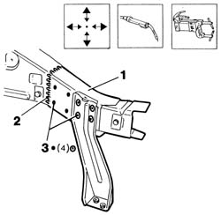
Applies to: all engines; all production periods
1. Cut the side panel at the bench. Take care to leave a sufficiently wide section of steel to attach the new part to.
Use a rotary brush to remove the corrosion-proofing around the edge of the parts.
2. Apply electric weld paint finish to the edges to be welded.
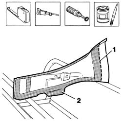
Applies to: all engines; all production periods
1. Lay the side panel in place and position correctly using self-locking clips.
2. Position front side panel connection beam (2a) and apply a few weld spots (2b). Check that the gap between side panel and side panel connection beam is 20 mm.
3. Use a circular saw to trim the panel and remove excess parts.
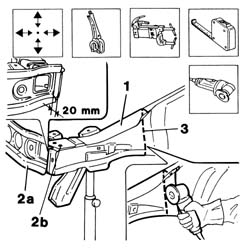
Applies to: all engines; all production periods
1. Use a rotary brush to clean the areas shown after removing the part.
Apply the electric weld paint finish.
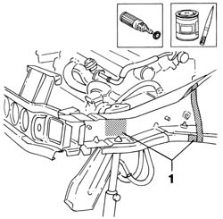
Applies to: all engines; all production periods
1. Position the side panel on the car using self-locking clips.
2. Use a MIG welder to carry out the seam welding.
3. Use a spot welder to weld the areas shown.
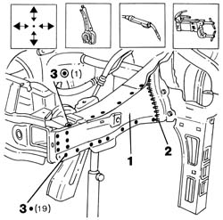
Applies to: all engines; all production periods
1. Correct any deformations in the panel using a profiled stake and mallet.
Use a grinding wheel to level weld residues and remove.
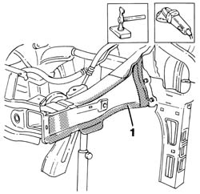
Applies to: all engines; all production periods
1. Apply rust-proofing to newly-welded areas.
2. Seal the joint lines shown in the figure.
Apply paint.
3. Apply wax oil inside the side panel.
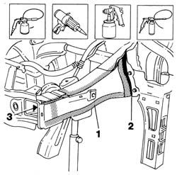
Applies to: all engines; all production periods